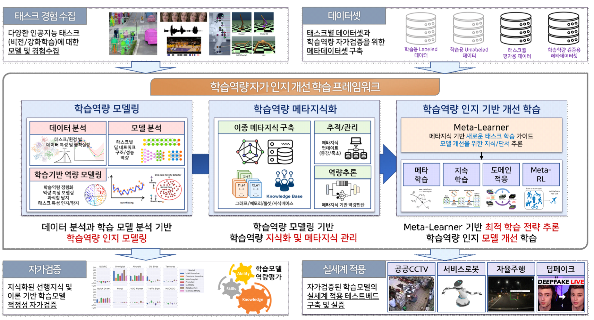

스스로 학습역량을 인지하고 활용하여 적정한 결과를 제공하는 인공지능 기술개발
연구기간: 2022.04 ~ 2026.12

연구실적(논문/학술대회)
[International Journals]
[International Conferences]
[Domestic Journals]
[Domestic Conferences]
[Promotions]
[Open SW]
Acknowledgement
This work was supported by Institute for Information &
Communications Technology Promotion (IITP) grant funded
by the Korea government (MSIT)(No. 2022-0-00124,Development of Artificial Intelligence Technology
for Self-Improving Competency-Aware Learning Capabilities).